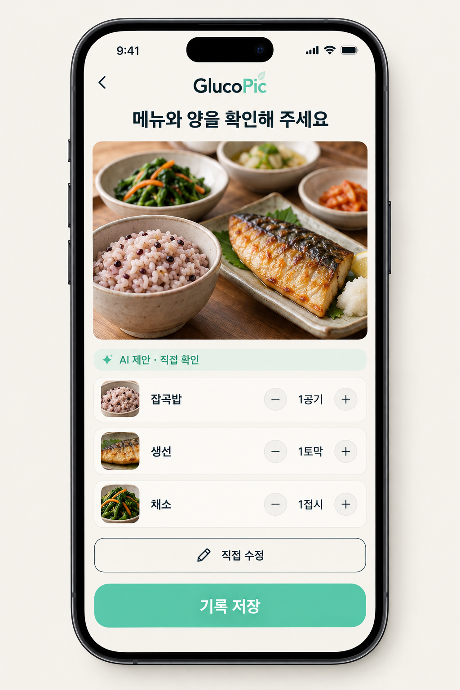
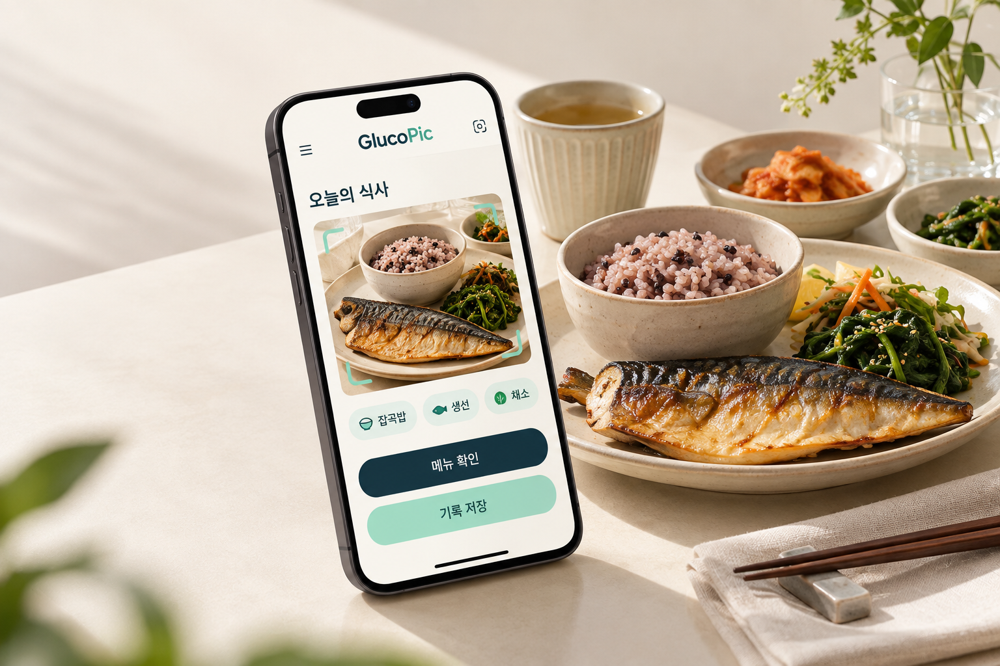
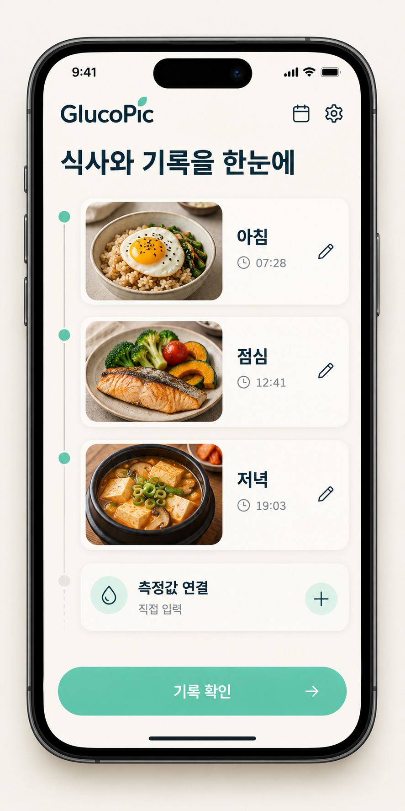
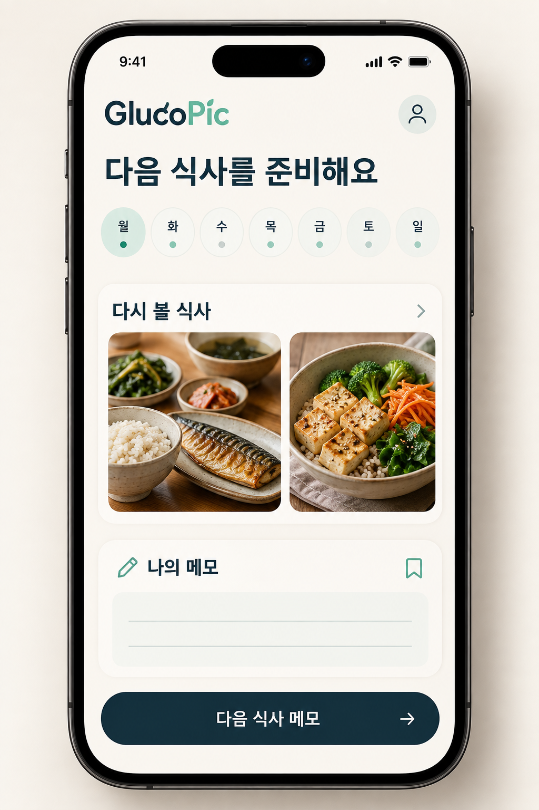
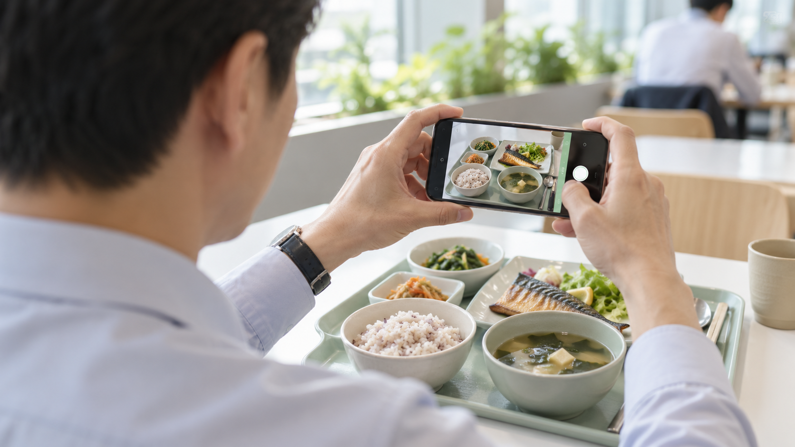

제안을 확인하기

AI가 제안한 메뉴와 양을 사용자가 확인·수정하는 설계.
AI 생성 설계안 · 화면 내용 예시 · 구현 미확인. 표시된 음식과 섭취량은 실제 측정값이 아닙니다.
화면 원본 크게 보기v1.5.0의 새 교육용 설계 예시
제품이 쓰이는 순간을 크게 보여 주고, 사용자가 해야 할 일을 화면으로 연결합니다. 글루코픽을 소재로 새롭게 만든 AI 제품 설계 갤러리입니다.
AI 생성 제품 콘셉트
구현 미확인 · 화면 내용 예시

한 장에는 한 행동을 담습니다. 화면의 핵심 부분을 크게 보이고, 설명은 사용자가 무엇을 확인하고 바꾸는지에 집중합니다. 아래는 구현 전 설계 흐름입니다.

AI가 제안한 메뉴와 양을 사용자가 확인·수정하는 설계.
AI 생성 설계안 · 화면 내용 예시 · 구현 미확인. 표시된 음식과 섭취량은 실제 측정값이 아닙니다.
화면 원본 크게 보기
식사 사진·시각·직접 입력값을 연결하고 오류를 수정하는 설계.
AI 생성 설계안 · 화면 내용 예시 · 구현 미확인. 실제 사용 이력이나 자동 기기 연동의 증거가 아닙니다.
화면 원본 크게 보기
이전 식사를 되돌아보고 다음 선택을 위한 메모를 남기는 설계.
AI 생성 설계안 · 화면 내용 예시 · 구현 미확인. 기록의 반복이나 건강 개선을 검증한 결과가 아닙니다.
화면 원본 크게 보기
사용 장면은 기능을 설명하기 전에 맥락을 전달합니다. 사람·장소·행동이 주장을 돕는 범위만 담고, 고객의 반응이나 문제 빈도를 이미지에서 추정하지 않습니다.
실제 고객의 불편과 행동을 주장하려면 별도의 인터뷰·관찰·사용 기록이 필요합니다. 이 장면은 그 근거를 대신하지 않습니다.
사진이 없어도 주장과 관계를 선명하게 만들 수 있습니다. 공식 원문에서 확인한 데이터는 수정 가능한 표·차트·도식으로 옮기고, 단위·기간·대상·출처를 함께 남깁니다.
| 설명할 내용 | 적합한 시각자료 | 함께 확인할 것 |
|---|---|---|
| 공식 통계 | 값이 확인되면 편집 가능한 차트·지표 | 분모, 단위, 기준 연도, 원문 위치 |
| 기존 대안 | 같은 과업과 조건을 나란히 놓는 비교표 | 타사의 실제 기능, 비교 조건, 미확인 범위 |
| 시장 규모 | 대상 범위와 계산 입력을 연결한 산식 | 고객 중복, 실제 가격, 이용기간, 가정 |
| 실행 일정 | 목표·담당·산출물·검증 기준을 잇는 도식 | 시작일, 책임자, 확인할 결과 |
한 장을 보기 좋게 만드는 데서 끝내지 않고, 근거와 시각 표현이 이어지는지 확인합니다.
장표가 답할 질문, 핵심 문장, 확인한 자료, 읽는 순서를 정합니다. 실제 사실과 가정·계획을 분리합니다.
외부 이미지는 원문과 권리를 확인합니다. 직접 만든 도식에도 근거를 연결하고, AI 이미지는 설계 보조임을 밝힙니다.
제품·비교·통계·산식·흐름·일정처럼 서로 다른 관계를 먼저 렌더합니다. 메시지와 증거가 읽히는지 확인한 뒤 구성을 확장합니다.
상세본과 발표본의 실제 PPTX를 다시 읽어 렌더하고 각 장을 직접 봅니다. 넘침·겹침·누락·크롭·라벨과 정보 위계·증거 가독성·연속 구성을 점검합니다.